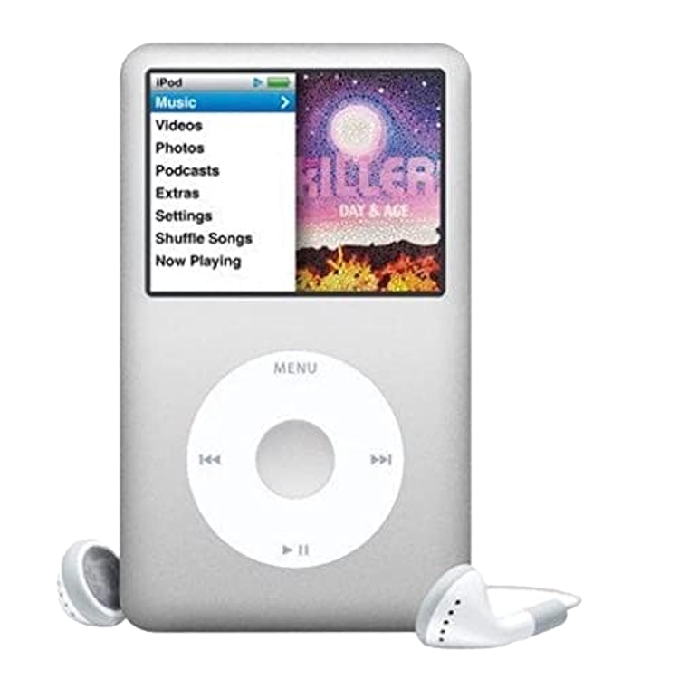
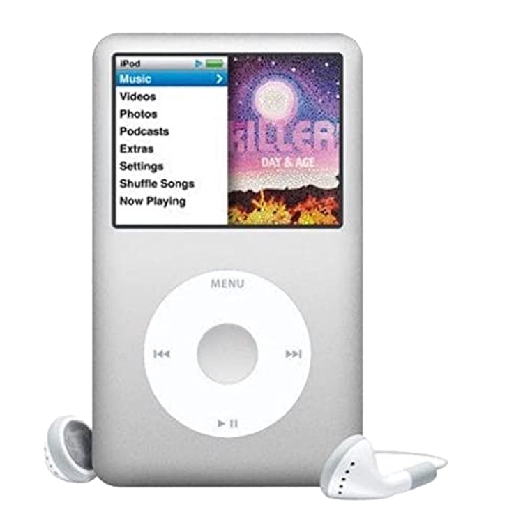

This is a classic beige tower PC from the late 1990s to early 2000s, a symbol of the golden era of home computing. Featuring a CRT monitor with low-radiation branding, a bulky tower case with a 3.5-inch floppy drive, and a CD-RW drive labeled “52x/32x/52x,” this setup was once the heart of countless homes, schools, and internet cafés. These machines typically ran on Windows 98 or Windows XP, powered by Intel Pentium III or early AMD processors. With their distinctive humming fans, beige plastic, and clunky mechanical keyboards, they offered a tactile computing experience that today feels almost analog. For many, this was the computer that introduced them to dial-up internet, LAN games like Counter-Strike, and the thrill of burning their first CD.
×
Tamagotchi
Tamagotchi is a handheld digital pet created in Japan by Akihiro Yokoi of WiZ and Aki Maita of Bandai. First released in 1996, it quickly became a global phenomenon, captivating children and adults alike. The device features a small, egg-shaped screen where users care for a virtual creature by feeding it, cleaning it, playing games, and ensuring its happiness. Over time, the Tamagotchi can evolve into different forms depending on how well it is cared for, making each user's experience unique. It is considered one of the earliest examples of digital interaction in toy form and has seen multiple reboots and versions over the decades.
×
Nintendo 64
The Nintendo 64, often abbreviated as N64, is a home video game console developed and released by Nintendo in 1996. Named after its 64-bit central processing unit, the N64 was a significant leap in gaming technology, bringing fully 3D environments to the mainstream for the first time. It was known for its distinctive three-pronged controller and introduced iconic titles such as Super Mario 64, The Legend of Zelda: Ocarina of Time, and Mario Kart 64. Despite facing stiff competition from Sony's PlayStation, the N64 carved out a lasting legacy with its emphasis on local multiplayer gameplay and innovation in 3D platforming. Today, it is celebrated as a beloved classic that shaped a generation of gamers.
×
iPod Classic 7th Generation
The iPod Classic 7th Generation, released in 2007, marked the final evolution of Apple’s iconic hard drive-based music player. Equipped with a massive 160GB of storage, a 2.5-inch color LCD display, and the familiar click wheel, it allowed users to carry tens of thousands of songs in their pocket — an unmatched experience at the time. Unlike later streaming-focused devices, the iPod Classic was all about ownership: your collection, your music, offline and uninterrupted. Its brushed aluminum faceplate and polished stainless steel back gave it a sleek, durable feel, while its long battery life made it a trusted travel companion. Even after its discontinuation in 2014, the iPod Classic remains beloved among music enthusiasts and collectors, symbolizing the golden age of digital music libraries and Apple’s minimalist design ethos.


 
